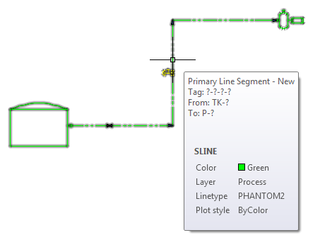

A sample to create and connect an SLINE in a P&ID drawing is installed with the SDK. The project name is CreateSline.
The sample illustrates how to use high-level APIs to create and connect P&ID components.
The high-level APIs are implemented by the managed classes AssetAdder, AssetUtil, LineGroupManager, and LineSegmentAdder in Autodesk.ProcessPower.PnIDObjects.
You can run the sample code to create and connect a tank, equipment, valves, and a line segment from an Imperial PIP project.

In the sample, the CreateSline_Automatic command runs the following code:
// Tank AddAsset(new Point3d(7.25, 9, 0), Vector3d.XAxis, Vector3d.ZAxis, new Scale3d(1), "Dome Roof Tank Style", String.Empty, true); // Pump AddAsset(new Point3d(20.3125, 15, 0), Vector3d.XAxis, Vector3d.ZAxis, "Horizontal Centrifugal Pump Style", String.Empty, true); // Primary PipeLine Point3dCollection points = new Point3dCollection(); points.Add(new Point3d(10, 10, 0)); points.Add(new Point3d(15, 10, 0)); points.Add(new Point3d(15, 15, 0)); points.Add(new Point3d(20, 15, 0)); AddSline(points, "New Primary Style", true); // Valve AddAsset(new Point3d(12, 10, 0), Vector3d.XAxis, Vector3d.ZAxis, "Gate Valve Style", String.Empty, true);
AddAsset and AddSline are defined in the sample (not directly in the Plant SDK) but they illustrate just how easily you can now create P&ID objects.
In addition to performing some required P&ID object and style management AddAsset includes:
Asset inlineAsset = null;
String sClassName = StyleUtil.GetClassFromStyleType(sPrimaryStyleName, StyleType.eGraphical, true);
if (Utils.isKindOfClass(sClassName, "Connectors"))
inlineAsset = new DynamicOffPage();
else if (AssetUtil.IsDynamicAsset(styleIdPrimary))
inlineAsset = new DynamicAsset();
else
inlineAsset = new Asset();
inlineAsset.SetDatabaseDefaults();
inlineAsset.StyleId = styleIdPrimary;
inlineAsset.Position = insertionPt;
inlineAsset.ScaleFactors = scaleFactor;
inlineAsset.XAxis = xAxis;
inlineAsset.Normal = Normal;
iAssetId = assetAdder.Add(inlineAsset);LineSegment lineSegment = new LineSegment();
ObjectId StyleId = StyleUtil.GetStyleIdFromName(sStyleName, StyleType.eGraphical);
lineSegment.StyleID = StyleId;
for (int i = 0; i < points.Count; i++)
lineSegment.AddVertexAt(i, points[i]);
lineID = lineSegmentAdder.Add(lineSegment, -1);A CreateSline_Manual command is provided to illustrate using AssetAdder with its CreateConnectionAndNozzle property set false. When set to false, connections are not performed automatically. Instead, AssetAdder.AddNozzleToAsset and LineUtil.ConnectLineWithAsset are called explicitly in the sample. This allows you to specify connecting objects such as flanges and nozzles.
For more information: see plantsdk_ref.chm.